Always on the right half
While the halves are connected, the right half's display shows the PDA instead of a status screen. Leave an app open, a clock or a running timer, and it stays in view while you type to your computer.
A tiny computer in your keyboard
The right half's display is a little PDA. Jot a note and type it out later, keep a clock or a timer in view, add up a bill, roll dice, drill kana, or play Tetris while you walk. One key gives the keyboard to the PDA, and one key gives it back to your computer.
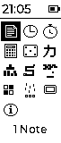
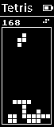
While the halves are connected, the right half's display shows the PDA instead of a status screen. Leave an app open, a clock or a running timer, and it stays in view while you type to your computer.
In PDA mode, every key goes to the PDA instead of your computer, and the display turns white on black so that you always know where your typing goes. Volume and media keys still reach the computer.
A note, or a number from the calculator, goes to your computer with ⌘ Return: the keyboard leaves PDA mode and types it out, key by key, wherever your cursor is.
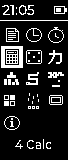
Both keys are on the System layer: hold the right thumb's fn⌫ key, and press 6 or 7. The layout page shows where they sit.
| Keys | Does |
|---|---|
| fn⌫ 6 | Selects the PDA as a sixth device beside the five Bluetooth connections, and gives it the keys. Press it again to give the keys back. |
| fn⌫ 7 | Opens a quick note right away. Esc gives the keys back, and the PDA returns to whatever it showed before. |
| Esc | In an app: back to the home screen. On the home screen: gives the keys back to your computer. |
| fn⌫ 1–5 | Choosing a Bluetooth connection, even the one you are on, also gives the keys back, to that connection. |
The apps sit in a grid of icons, three to a row. The highlighted app's name shows under the grid, and once the PDA knows the time, it shows in the title bar.
| Keys | Does |
|---|---|
| Arrows, WASD, HJKL | Move the highlight: sideways by one, up and down by a row. |
| Space, Return | Open the highlighted app. |
| 1–9, 0 | Open the first ten apps directly; the number shows next to the app's name. |
The PDA remembers the last app you opened, so the keyboard starts with it, even if you went back to the home screen before you stopped. Every app keeps its state when you leave it: a game waits where you left it, and a timer keeps counting.
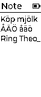
A note to type into while you think, kept when the keyboard restarts. Swedish letters work, through the Keypad layer's å, ä and ö.
| Return | A new line. |
| ⌫ · ⌘ ⌫ | Delete the last character · the whole note. |
| ⌘ Return | Type the note out to your computer, then empty it. |
| Esc | Close the note; it stays for next time. |
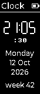
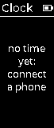
The time in big digits, with the seconds, the weekday, the date and the week number. The keyboard reads the time from a connected iPhone over Bluetooth; a Mac does not offer it. Connect the phone for a few seconds and the clock keeps running after it goes.
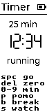
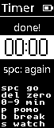
A stopwatch, or a countdown. It keeps counting while you type to your computer, and a finished countdown inverts its digits.
| 0–9 | Type the countdown's minutes. |
| P · B · S | A 25-minute pomodoro · a 5-minute break · the stopwatch. |
| Space | Start, pause, and start again after the end. |
| ⌫ | Back to zero, or delete the last digit typed. |
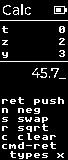
A calculator in reverse Polish notation, with a four-level stack, as on HP's: type a number, push it, type another, and press the operation. 2 Return 3 + makes 5.
| Return, Space | Push the number. |
| + - * / | Combine the two lowest numbers; the keypad's keys work too. |
| N · S · R · C | Negate · swap the two lowest · square root · clear everything. |
| ⌫ | Delete a digit, or clear the lowest number. |
| ⌘ Return | Type the lowest number out to your computer. |
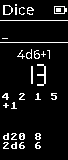
For the table: type a roll such as 2d6+3, d20 or 4d6-1 and press Return. The total shows in big digits, the single dice under it, and the three rolls before it at the bottom.
| Return | Roll what you typed, or roll the last roll again. |
| Space | Roll a d20. |
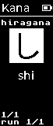
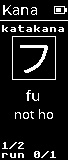
A drill of the 46 basic hiragana and katakana: type the romaji for the kana shown. A right answer fills the box; a wrong one shows the answer. Kana you miss come back more often, and the PDA keeps your progress when it restarts.
| Letters | Type the romaji; shi and si, tsu and tu both count. |
| Any key | On to the next kana; a letter starts its answer. |
| Tab | Hiragana, katakana, or both. |
The well is ten blocks wide and twenty high, the next piece shows top right, and the level, and the speed, rises every ten lines.
| Space | Start; in a game, drop the piece to the bottom. |
| ← → (A D) | Move the piece. |
| ↑ (W), X · Z | Turn it clockwise · anticlockwise. |
| ↓ (S) | Drop it one row. |
| P | Pause. |
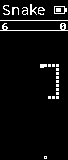
Eat, grow, don't hit the walls or yourself. The snake speeds up as it grows.
| Space | Start. |
| Arrows, WASD | Steer. |
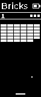
Breakout: knock out the wall with three balls. The paddle's edges send the ball off steeper, and every new wall comes faster.
| Space | Start, and serve the ball. |
| ← → (A D) | Hold to move the paddle. |
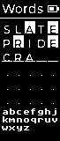
Guess the five-letter word in six tries. A filled cell is the right letter in the right place, a framed cell a letter that the word has somewhere else. The letters not ruled out yet show under the grid.
| Letters, ⌫ | Type the guess. |
| Return | Guess. |
| Space | A new word, after the end. |
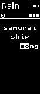
Words fall; type them before they land. The first letter picks the lowest word that starts with it. Three misses and the game is over, and the rain gets heavier as you score.
| Space | Start. |
| Letters | Type the words. |
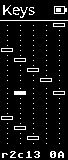
A key tester for a new build: a cell for every key position, filled while you hold the key and outlined once it has been pressed. The line at the bottom names the last key's row, column and key code. ⌘ ⌫ starts over.
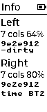
Each half's number of key modules, battery and firmware build, and which Bluetooth connection gave the clock its time.